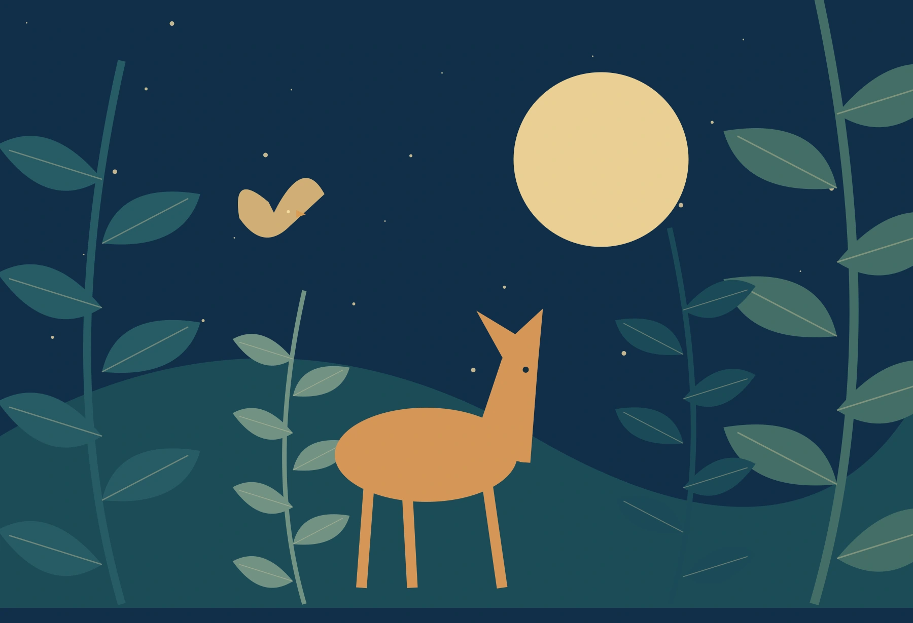

Editorial Illustration
From $800 / pieceMagazine covers, article illustrations and op-ed visuals that add a new perspective.
Typical turnaround: 1–2 weeks

SMALL STORIES. A WORLD OF POSSIBILITY.PORTLAND, OREGON · AVAILABLE WORLDWIDE
Illustrator & Visual Storyteller
Original illustration · Concept portfolioA FEW THINGS I'VE BEEN DREAMING UP
Nature, imagination
and the stories in between.
Original concept studies. Named publications and brands are brief samples, not verified commissions.
A LITTLE ABOUT THE PERSON BEHIND THE PICTURES
I'm a freelance illustrator based in Portland, Oregon, creating work that blends the natural world with human emotion.
My favorite stories begin with a small observation: a bird on a wire, a city window after dark, or a plant quietly taking over a room. I turn those moments into layered, characterful illustrations for pages, products and people.
The sample profile in this brief describes eight years of practice and study at Rhode Island School of Design. Those credentials and the sample client list are awaiting verification; this demo's actual work is original SVG illustration.
*Illustrative figures from the brief, not verified professional credentials.
Download full sample CVSAMPLE CLIENT NAMES FROM BRIEF
The New Yorker · Bloomberg · HarperCollins · Oatly · Wired
LET'S MAKE SOMETHING MEANINGFUL
Sample starting prices and turnaround from the brief; a real engagement requires an approved scope and licensing agreement.
Magazine covers, article illustrations and op-ed visuals that add a new perspective.
Typical turnaround: 1–2 weeks
Cover design, interior illustrations and chapter headers for stories worth getting lost in.
Typical turnaround: 3–6 weeks
Packaging, campaigns and distinctive illustration systems that grow with a brand.
Typical turnaround: 2–4 weeks
Looking for something custom? Let's talk.
A SMALL PIECE OF THE WORLD, FOR YOUR WALL
Concept shop: sample prices and editions; browsing only, with no checkout or live inventory.
CLIENT PERSPECTIVES / SAMPLES FROM THE BRIEF
These supplied sample quotes are unverified and are not represented as real endorsements.
“Maya's work brought our cover story to life in ways we couldn't have imagined.”
Art Director
Bloomberg Businessweek
“She understood our brand ethos immediately and delivered illustrations that feel authentically Oatly.”
Creative Director
Oatly
“Working with Maya was seamless. The final book cover exceeded our expectations.”
Editor
HarperCollins
HAVE A STORY IN MIND?